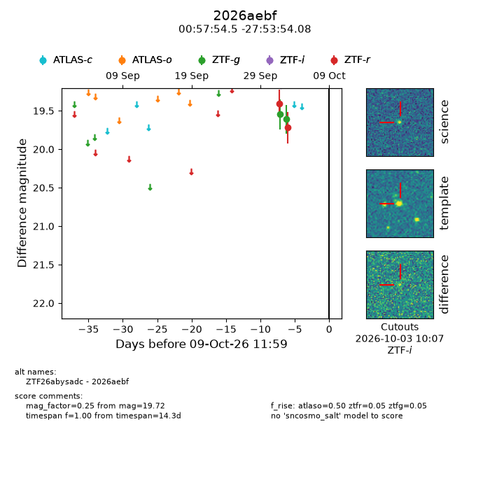
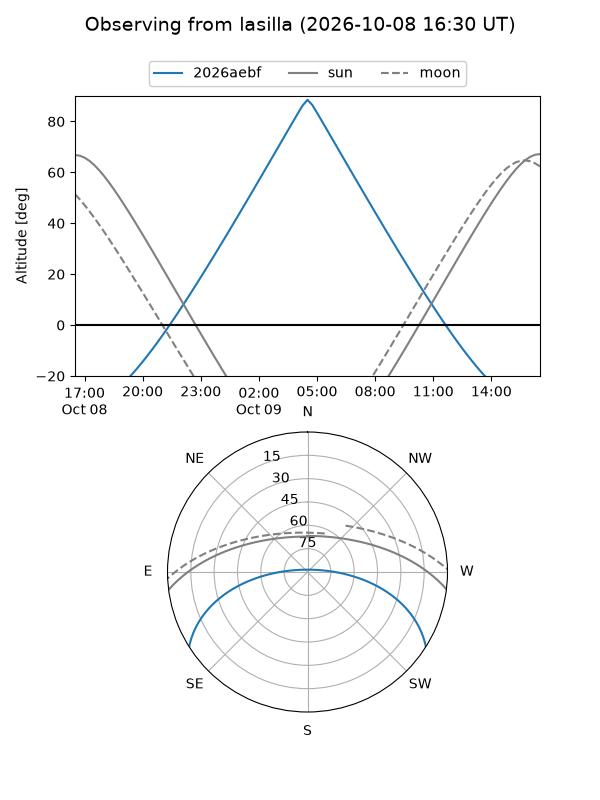
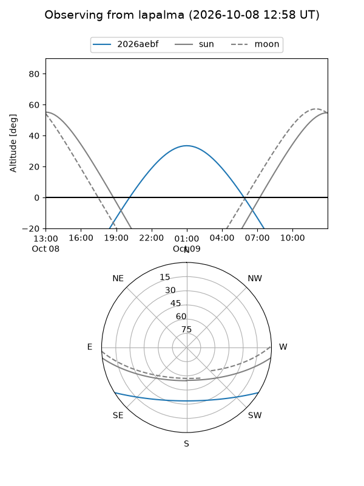
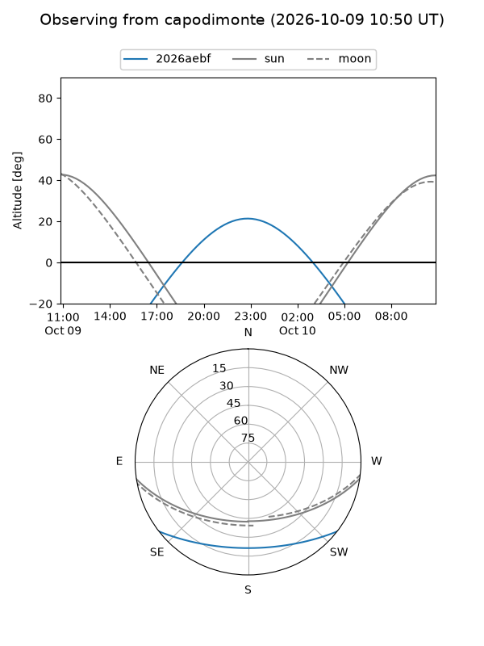

2026aebf
Target 2026aebf at 2026-10-09 12:01
Aliases and brokers:
FINK-ZTF: ztf.fink-portal.org/ZTF26abysadc
Lasair-ZTF: lasair-ztf.lsst.ac.uk/objects/ZTF26abysadc
ALeRCE-ZTF: alerce.online/object/ZTF26abysadc
YSE-PZ: ziggy.ucolick.org/yse/transient_detail/2026aebf
TNS name: wis-tns.org/object/2026aebf
Direct TNS query: direct search
alt names
ZTF26abysadc (ztf,fink_ztf)
2026aebf (tns,yse)
Coordinates:
equatorial (ra, dec) = 14.4770,-27.89836
equatorial (HMS+DMS) = 00:57:54.48,-27:53:54.08
galactic (l, b) = (241.5312,-88.37181)
Flags:
Photometry:
last atlaso=nan, ztfg=19.61, ztfr=19.72
1 atlaso, 2 ztfg, 2 ztfr detections
Lightcurve

Visibility



Additional plots